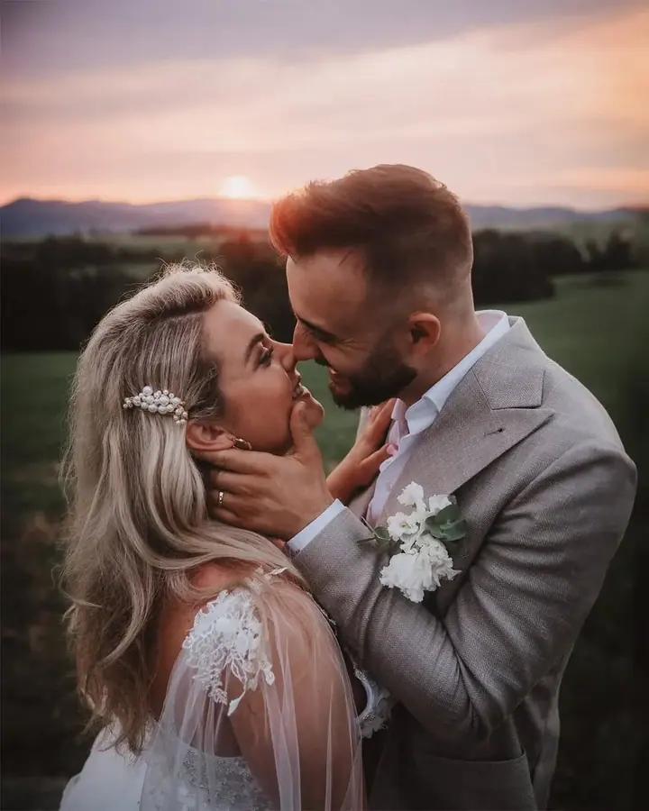
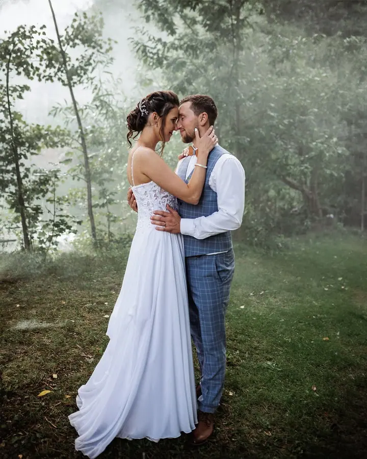
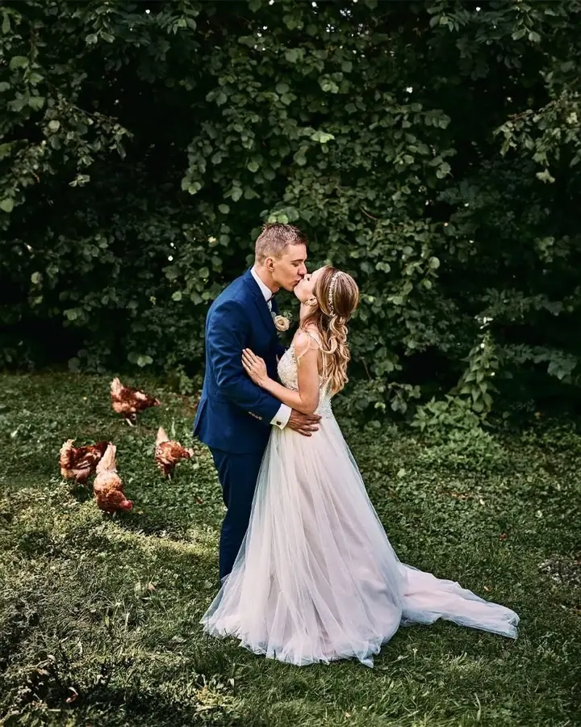

jedna
Svatební focení
Zachytím váš den přesně takový, jaký je: přirozený, emotivní a autentický. Nabízím naprostou časovou flexibilitu a ochutnávku prvních fotek už do dvou dnů od svatby.

Svatební a portrétní fotograf · Brno, Židlochovice, Vyškov

Jmenuji se Ondřej Dopita Teiner a jsem fotograf z Kroměříže. Fotím svatby, páry a portréty i boudoir po celé jižní Moravě, nejčastěji v okolí Brna, Židlochovic, Vyškova a Kroměříže. Mám rád přirozený styl, který odráží osobnost a náladu lidí na fotkách.
Více o mně
Co fotím
jedna
Zachytím váš den přesně takový, jaký je: přirozený, emotivní a autentický. Nabízím naprostou časovou flexibilitu a ochutnávku prvních fotek už do dvou dnů od svatby.
dvě
Láska ve dvou nebo krása a síla vaší osobnosti. Vždycky se snažím vytvořit uvolněnou atmosféru, protože nejlepší fotky vznikají, když jste sami sebou.
tři
Smyslné focení v interiéru i venku v přírodě, v klidu a bez spěchu. Společně najdeme snímky, které budou opravdové a jen vaše.
Radost s rodinou, těhotenské focení i lifestyle newborn. Fotím přirozeně, aby fotky odrážely vaši náladu a to, jací opravdu jste.
Nejlepší fotky vznikají, když jste sami sebou
Za objektivem
Ahoj, jmenuji se Ondřej, pocházím z Kroměříže a je mi 34 let. Fotografování se věnuji už 8 let a za tu dobu jsem poznal spoustu lidí a spoustu příběhů. Fotografování pro mě není jen koníček, ale vášeň a způsob, jak vyjádřit svůj pohled na svět.
Baví mě zachycovat emoce, příběhy a krásu okamžiků, které se pak stanou vzpomínkami. Fotím svatby, páry, portréty, rodiny, těhotenské a lifestyle newborn focení, boudoir i glamour. Dělám také samostatné reportáže z plesů, křtin, oslav a dalších akcí a komerční focení pro firmy.
Když nejsem zrovna za foťákem, rád cestuji, sportuji a pořád se vzdělávám, abych rozšířil své dovednosti. Na focení vám chci vytvořit uvolněnou atmosféru, protože věřím, že ty nejlepší fotky vznikají, když jste sami sebou.
Ondřej
Termín si můžete zarezervovat e-mailem, přes Instagram, Facebook nebo kontaktní formulář na webu.
Probereme, co si představujete. Styl, lokaci a čas focení vždycky ladíme podle vás.
Hlavní je pro mě uvolněná atmosféra. Nic nehrajeme, stačí, když budete sami sebou.
Každou fotku pečlivě upravím. U svatby navíc dostanete ochutnávku prvních fotek už do dvou dnů.
Portfolio
Otázky
Po celé jižní Moravě, nejčastěji v okolí Brna, Židlochovic, Vyškova a Kroměříže. Domluvit se ale můžeme i na focení jinde na Moravě.
Ochutnávku prvních fotek posílám už do dvou dnů od svatby. Zbytek pečlivě upravím a pošlu vám ho celý.
Časově jsem naprosto flexibilní. Rozsah focení přizpůsobím vašemu dni a vašemu rozpočtu, cenové plány najdete v ceníku.
Ano. Dělám reportáže z křtin, plesů, narozenin a dalších akcí a také komerční focení produktů, business fotky a fotky pro reklamu.
Napište pár vět o tom, co si představujete. ondrej@dopitafoto.cz